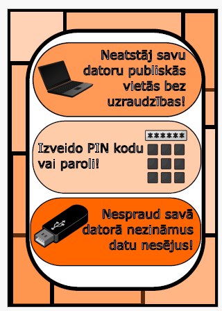

Mana Individuālā darba tēma bija par datortehnikas fizisko drošību. Es savā darbā izveidoju trīs galvenos punktus par šo tēmu:
Darba ietvaros es izveidoju plakātu, plakāta skici un GIF.

Datu drošība apzīmē cipardatu, piemēram, datubāzēs uzglabāto datu, aizsargāšana no nevēlamām darbībām un neautorizētām personām, piemēram, kiberuzbrukumiem.